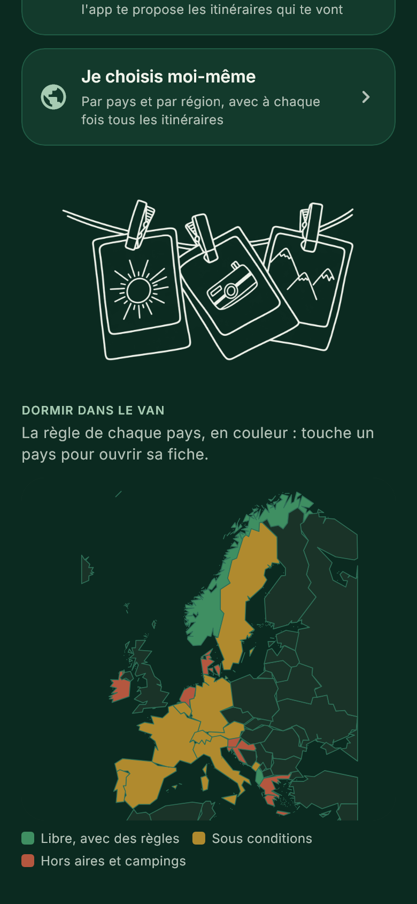
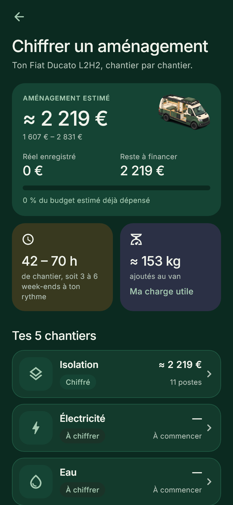
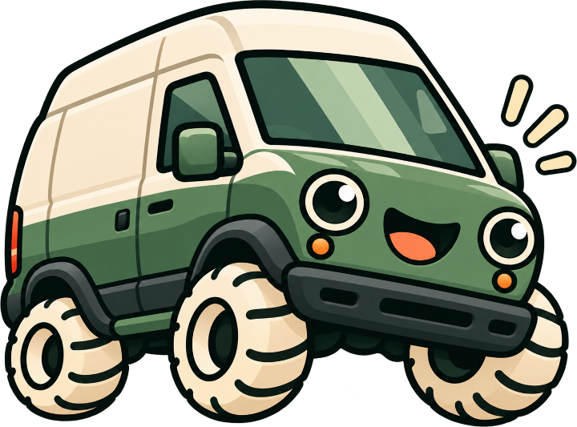

Van'Up
Ton van, de l'idée à la route.
L'app des vanlifers : choisir un van d'occasion, chiffrer son aménagement, le construire dans le bon ordre, puis partir sur les routes d'Europe. Elle sert aussi à qui a déjà un van aménagé : entretien, autonomie en eau et en batterie, dépenses à plusieurs.
- 20modèles de vans décortiqués
- 5chantiers chiffrés
- 73fiches de construction
- 33itinéraires, 7 grands tours
- Choisir
- Chiffrer
- Construire
- Voyager
- Vivre à bord




FlutterHors ligneSans compteFrançais, English, DeutschLecture de tickets sur le téléphone